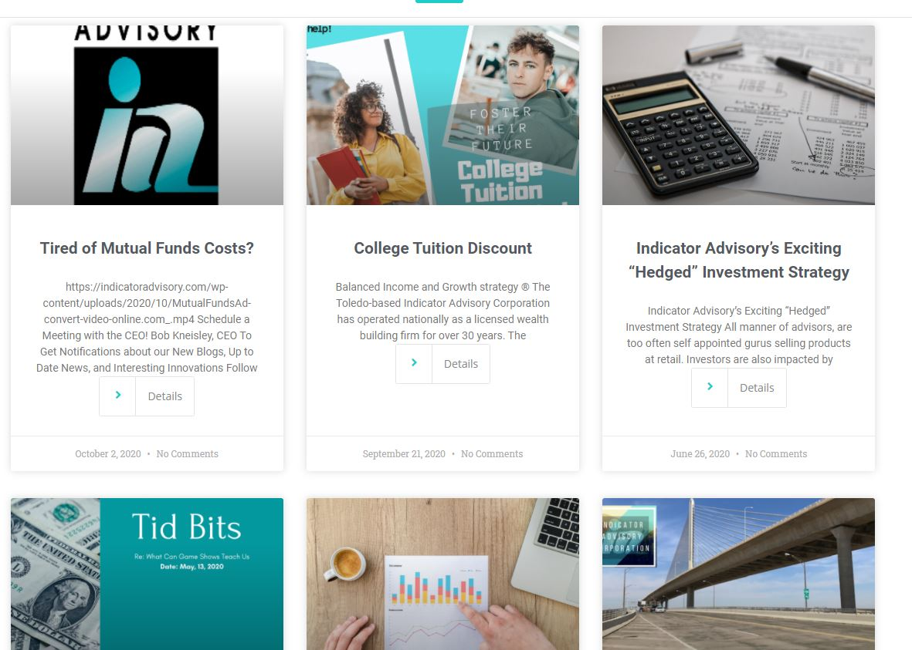
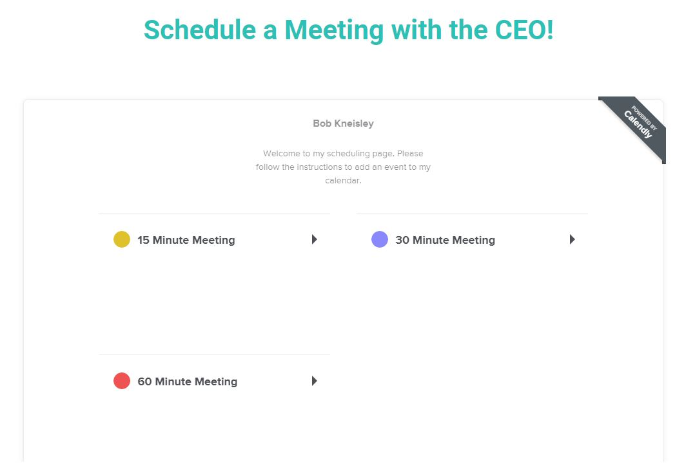

Web Design Consultant
As a web design and SEO consultant at IAC I gained the experience to completely redesign the firm's website. I was able to make the site more responsive and modern while adding new features.
Client's Problems
The client was having multiple problems with their website provider/ host and difficulty editing the site. I was hired as a consultant to redesign and solve the following problems and more
Responsive Web Design
The previous website was not responsive nor did it have device specific CSS. According to Nibbler Website Grader from silktide, IAC recieved a 10/10 and is optimized for mobile and tablet devices!

Structured Navigation
The client was lacking an organized navigation system. I solved this problem by breaking the site down into 6 main categories. This allows the user to easily find what they are looking for and use the subcategories if they want specific information. In addition, the user can find most of the content they commonly are looking for on the homepage.

Blog & Integrated Content
The former website host had provided some blog content but it was all copyrighted and no longer usable. I created a custom html template for our new blog posts and worked with the CEO for content that fit the firms style and ideals. The blogs even have 'Calendly' and exit-intent popup integration!
 